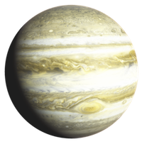
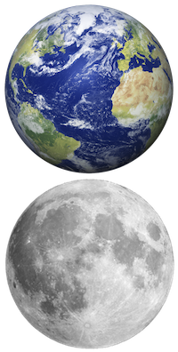
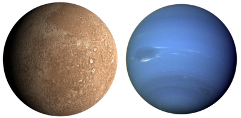
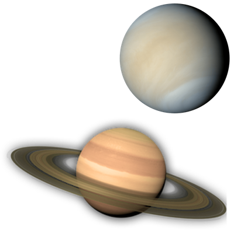
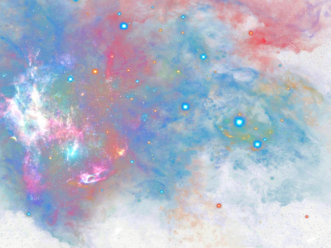
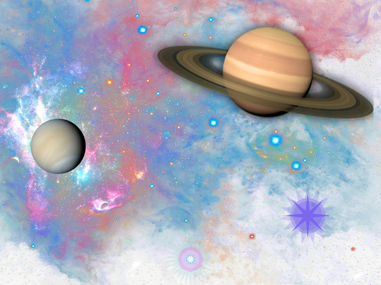

Building Pictures with Racket
Building Pictures with Racket
By Rowan Weir, Daniel Barnas, Allan Schougaard
Introduction
The 2htdp/image and picturing-programs libraries provide built-in functions and primitives that allow you to produce simple graphics and even build complex illustrations.
The functions available in these libraries can be placed into a few broad categories for easier understanding and use, as you can see in the table of contents on the left.
To download and install DrRacket on your computer, please visit this link.
Simple Shapes
To use the code in this chapter include this line in your program before any other source code:
(require 2htdp/image)
(require picturing-programs)
Let's start with a basic circle, one of the easiest shapes to create.
A circle only requires three parameters: size, mode, and color.
We will see these parameters and this format repeated in the construction of other shapes, but what differentiates a circle is that the size is defined by the radius.
The radius is given as a number, denoting how many pixels used, which is typical for how size is defined in Racket.
The mode and color parameters don't change much between shapes, with mode describing whether the circle should be solid or an outline, and color, which we will discuss more in depth a little later.
(circle size mode color) → Image
What circle will be created with the following?
(circle 80 "solid" "red")
Try for yourself by clicking this button:
Was this your result?

As expected, the resulting image is that of a solid red circle.
If we switch the mode to "outline," we get the following:
(circle 80 "outline" "red")
Two functions that will come in handy when dealing with graphics are image-height and image-width.
Their signatures are as follows:
(image-height img) → number (height in pixels)
(image-width img) → number (width in pixels)
Circles are easy to create because their radius is the same in all directions.
What if instead we wanted to draw an elongated circle, or an ellipse?
The ellipse function is very similar to that of a circle, except that we need to specify a width and a height.
(ellipse width height mode color) → Image
Let's try creating an ellipse:
(ellipse 200 100 "solid" "pink")
What do we get?

Polygons
Polygons are shapes consisting of any number (>= 3) of straight sides. Creating them in Dr. Racket involves a process that is similar to how we made our previous rounded shapes. Let's look at some of them in more detail.
Squares
Like a circle, the square function requires a size.
In this case, the given numerical value specifies the length of a side.
This is followed by the mode and color, as before.
(square side-length mode color) → Image
Here's an example:
(square 150 "solid" "blue")
Try It
And here's what is created:

What about a square with a different mode?
(square 150 "outline" "blue")
Try It

Rectangles
By now the general outline for the functions used to define shapes should be becoming familiar.
Can you guess what parameters might be needed to create a rectangle?
(rectangle width height mode color) → Image
(rectangle 225 125 "solid" "green")
Try It

Triangles
There are several varieties of triangles you can create with Dr. Racket.
We are going to cover two: equilateral triangles and right triangles.
Equilateral triangles have three sides of equal length, and whose three angles, by extension, are also equal.
To produce an equilateral triangle, you simply specify the desired side length, followed by the usual mode and color parameters.
(triangle side-length mode color) → Image
For example:
(triangle 150 "solid" "yellow")
Try It

A right triangle contains a 90 degree angle.
To construct a right triangle, you provide the two side-lengths of the sides adjacent to the right angle.
(right-triangle side-length-1 side-length-2 mode color) → Image
(right-triangle 200 100 "solid" "orange")
Try It

Stars
There are several functions that produce star designs.
A traditional five-pointed star can be created with the star function.
(star side-length mode color) → Image
Here is an example:
(star 100 "solid" "purple")
The radial-star function is a bit more complicated, but produces a design of greater intricacy.
(radial-star point-count inner-radius outer-radius mode color) → image
The point-count is a numerical value that determines how many points you'd like your star to have.
The inner-radius creates the radius of the body of the star, where the wide end of the points connect.
The outer-radius produces the distance that each outer point of the star reaches.
The mode and color arguments are the same as for all the shapes above.
(radial-star 15 50 25 "solid" "violet")

There is one more type of star we can construct, and that is the star made out of polygons.
The star-polygon is almost exactly the same as a regular polygon, except that it takes one more argument, the step-count.
Instead of each vertex connecting to the one next to it, it instead connects to the vertex that is step-count vertices away, creating a star-like design.
(star-polygon side-length side-count step-count mode color) → Image
Here's an example:
(star-polygon 50 10 3 "outline" "indigo")

Other Polygons
If you want to construct shapes with more than three or four sides, you can use the regular-polygon function.
With this function, you can construct regular polygons with any number of sides, and of any side length.
This is how we construct pentagons, hexagons, octagons or any other many-sided shape.
(regular-polygon side-length side-count mode color) → Image
(regular-polygon 20 8 "solid" "palegreen")

Text
If you want to add words to your images, text can be created with the text function, which requires a string of characters, a font size, and a color.
(text string font-size color) → Image
Note that text returns an Image, not a String.
(text "Earth" 50 "lightskyblue")

More detailed and stylized text formatting can be accomplished by using the text/font function.
It takes a variety of parameters that allow you to control individual aspects of how your text looks.
(text/font string font-size color face family style weight underline?) → Image
(text/font "Mars" 50 "hotpink" false "system" "normal" "bold" true)

(text/font "Venus" 50 "gold" false "roman" "italic" "normal" false)

Color
So far, the colors we have been using are in the form of strings such as "blue", "red", or "turquoise." These are predefined colors in the Racket color database. For a full list of predefined colors you can use when creating graphics, see this document.
But what if you want to use a color that hasn't been predefined? The 2htdp/image library has a function that allows us to create almost any color imaginable.
On your screen, all colors are comprised of varying levels of red, green, and blue.
Racket, like most computer graphics systems, uses colors created from these three channels.
The value of each level of color is a whole number that ranges from 0 to 255.
To produce black, you would set each channel (red, green, and blue) to 0.
To produce white, you would set all channels to 255.
Every other possible color is a mix of the three primary colors.
Using the function make-color, we can create a color by specifying these RGB channels.
(make-color red green blue) → Color
Let's see an example:
(circle 75 "solid" (make-color 64 224 208))
Does your result look like this?

There is a fourth possible input parameter for the function make-color: alpha.
The alpha determines the opacity (or transparency) of the color.
An alpha value of 255 gives you a fully opaque (non-transparent) color.
The closer you get to 0, the more transparent your color becomes.
(make-color red green blue alpha) → Color
If we take our previous circle and add an alpha of 50, what do we get?
(circle 75 "solid" (make-color 64 224 208 50))

Experiment with different values for red, green, blue, and alpha in the example above to get an idea for how you make different colors.
If you want to make changes to one of Dr. Racket's predetermined colors, the picturing-programs library provides a function that can help.
The name->color function accepts the name of a color, like those found in the color database, and returns the numerical values of the RGB and alpha channels.
Let's Try It out with a color from the database.
What values of red, green, and blue make up the color "plum?"
(name->color "plum")
What are the values of red, green, and blue that make up the color "aqua?" Let's find out:
(name->color "aqua")
As you can see, the output of this function looks familiar.
(make-color 221 160 221 255)
name->color is unusual among functions we've learned up to this point because it returns a function.
In fact, it returns the same function that we would call in order to create the color "aqua".
Editing
So far we have learned how to create various shapes and images, but we haven't attempted to alter them in any way.
The htdp/image and picturing-programs libraries provide a large selection of editing tools that we can use on existing images.
Let's start this section by bringing in an image from an external source.
In Dr. Racket, you can insert actual images directly into your code by copying and pasting, or you can use the Insert menu.
To bring an outside image into your program, open the Insert menu at the top of the screen.
From there, select 'Insert Image ...'.
Pick the image file you would like to add from the directory prompt appears.
Upon opening the file, the image should appear where the cursor is located.
Once the image is inside your program, you can move your image to where you need it in your code by copying and pasting as normal.
You can also manipulate the image with one of the functions that allow you to alter or change an image.
Functions in this category include:
rotate: spins an image a specified number of degreesflip: flips an image across an axisscale: enlarges or shrinks an imagecrop: removes part of an imageframe: places a box/frame around an image
In order to try these out, we'll create an image constant called moon.
This will make it easier to do different things wth the image without having to copy and paste it each time.
(define moon
It's a good practice to define your images as constants, especially if you are using multiple images in a program.
They can then be combined to create elaborate scenes and pictures.
Let's do the same thing with a few other images we might want to use:
 )
)
(define venus
 )
)
(define earth
 )
)
(define mars
 )
)
(define saturn
 )
)
(define jupiter

)
(define neptune
 )
)
Try It
From now on in our code, we can refer to any of these images by the constants assigned.
Before we learn more about these editing functions, let's talk about how images can serve as arguments to functions.
In this case, we will use the constant we created up above with the image-height and image-width functions.
How does the result compare to your perception of the height and width of the image?
Is this what you expected? Why or why not?
If a function takes an argument of the image datatype, then any code that returns an image should work equally well as an argument.
Take a look at this code, for example.
(image-height (circle 15 "red" "solid"))
Racket first creates image of a circle, and then feeds it directly into the image-height function.
You never see the image, but you obtain the information relevant to the function used.
This will come in handy shortly when we want to edit and combine images.
The first editing tool we will explore is the rotate function.
Rotate has two parameters:
(rotate angle image) → Image
This function rotates an image in the counterclockwise direction by the number of degrees specified.
Let's Try It on the moon:
(rotate 90 saturn)
 You can also rotate images in the clockwise direction using a variation of
You can also rotate images in the clockwise direction using a variation of rotate, the rotate-cw function.
(rotate-cw 60 saturn)
 We also have the option to scale an image to make it larger or smaller.
The
We also have the option to scale an image to make it larger or smaller.
The scale function has two parametes:
(scale factor image) → Image
The scale factor is the amount by which an image is either increased or decreased.
A number between 0 and 1 will result in an image smaller than the original, and a number larger than 1 will result in an image larger than the original.
Let's see this in action:
(scale 0.5 neptune)

(scale 2 neptune)
 There are two versions of the
There are two versions of the flip function.
flip-horizontal flips an image across the horizontal axis for a mirror image of your original image.
flip-vertical flips the image across the vertical axis.
Each of these functions take only the image you want to manipulate.
(flip-horizontal jupiter)

(flip-vertical jupiter)
 The last of the major editing functions is the
The last of the major editing functions is the crop function.
There are a few variations of this function, which more precisely define how the image should be altered.
They include:
- Simple directional:
crop-top,crop-bottom,crop-left,crop-right. - Multi-directional:
crop/align - Coorinate-based:
crop
(crop-top image number-of-pixels) → Image
(crop-bottom image number-of-pixels) → Image
(crop-left image number-of-pixels) → Image
(crop-right image number-of-pixels) → Image
These functions work by cropping the specified section of a given image by the given number of pixels.
For example:
(crop-right moon 125)

Placement
The placement functions control where, and in what order, images appear.
You can think of these functions as having few major types, then some variations on each type.
Major types include:
abovebesideoverlayunderlayplace-image
Like the editing functions, the placement functions have variations that allow greater specificity and level of control over where the image appears.
/alignuses x and y coordinates to determine at what point the images are aligned./offsetmoves the image a certain amount on the x and y axes./xyis similar but the images begin aligned at the top right (not the center).
In this section, we are going to utilize our knowledge from what we've done previously in combination with new placement functions to build an image.
We have a couple options to place multiple images in a scene.
The function above takes a series of images, and places the first above the other in sequence.
(above image1 image2 ...) → Image
(above earth moon)
See how this function stacks everything vertically?

To order our images horizontally, we can use the beside function.
(beside image1 image2 ...) → Image
This function returns your images ordered left to right.
(beside mars neptune)

The
above and beside functions have a variation we can call /align.
(above/align x-place image1 image2 ...) → Image
(beside/align y-place image1 image2 ...) → Image
Take a look at the first parameter for each of these functions.
above/align requires a string that specifies a place on the x-axis, such as "right" or "left", while beside/align requires a place on the y-axis like "top" or "bottom".
You might notice these are the same options available for the crop function.
It might become more apparent when you see these functions in action.
(above/align "right" venus saturn)

Experiment with the beside/align function and see how it differs.
So far in this section, we have used images we brought in from an external source.
Let's try using the placement functions to build an image from shapes in the htdp/image library.
Specifically, a star.
First, we need to create some shapes.
You can create any shapes you want, in any size and color, but here's what we are going to be working with in our example.
You may want to stick close to the example this first time through and get more creative later.
(radial-star 8 40 10 "solid" "mediumslateblue")
(rotate 18 (radial-star 15 50 30 60 "mediumslateblue"))
(circle 30 80 "mediumslateblue")
(circle 25 100 "mediumslateblue")
What we want to do is place these images on top of each other.
The overlay function allows us to do exactly that.
(overlay image1 image2 ...) → Image
With overlay, objects appear directly on top of one another, with the first listed being the top-most visible one, through to the last on the bottom.
Let's Try It out. Don't forget to name your image so that its easier to use later.
(define purple-star
(overlay
(radial-star 8 40 10 "solid" "mediumslateblue")
(rotate 18 (radial-star 15 50 30 60 "mediumslateblue"))
(circle 30 80 "mediumslateblue")
(circle 25 100 "mediumslateblue")
)
)
What does the result look like?

Now, overlay is not the only way to stack shapes and images.
underlay is another option.
(underlay image1 image2 ...) → Image
In addition to having a similar template, this function operates very similarly, but in reverse order, with the first image listed appearing underneath all others.
Let's Try It out by making another flower.
(define blue-star
(underlay
(rotate 18 (radial-star 30 45 25 100 "powderblue"))
(rotate 22.5 (regular-polygon 17 8 100 "violet"))
(circle 15 100 "lavender")
(circle 8 "solid" "skyblue")
(radial-star 10 10 5 "solid" "linen")
)
)
Here is what it looks like:
Do you see how the order of layers is reversed, as opposed to overlay?
overlay and underlay to see how a square with a side length of 150 compare to a circle with a radius of 80 (from the first section)
Now we have two stars.
We want to create a scene with them and some of our previous images.
There are many options for placing our images in a scene.
But to do so, we are going to need to create a background on which to place them.
The empty-scene function creates an outlined rectangle, a 'scene' on which to place things.
(empty-scene width height color)
If you don't include a color, the scene will default to white.
But we probably want to use something a bit more detailed.
(define sky

)
To do this, we can use overlay, underlay, or one of their many variations:
(overlay/align x-place y-place image1 image2 ...) → Image
(overlay/offset image1 x y image2) → Image
(overlay/align/offset x-place y-place image1 x y image2) → Image
(overlay/xy image1 x y image2) → Image
As you can see, much like
(underlay/align x-place y-place image1 image2 ...) → Image
(underlay/offset image1 x y image2) → Image
(underlay/align/offset x-place y-place image1 x y image2) → Image
(underlay/xy image1 x y image2) → Image
above and beside, overlay/align and underlay/align use an x-place and y-place to specify where to place an image in relation to another one.
However, these functions require both an x and y place.
overlay and underlay also have some variations we haven't encountered before.
The /offset variation actually works similarly to that of /align, but instead of using a place on a particular axis, the function takes a numerical value.
Given this fact, what do you think /align/offset might do?
The /xy variation may look similar to the previous functions, but it does something quite different.
Instead of determining the amount by which the image is offset or aligned on a particular axis, the x and y positions exactly place the image at those coordinates.
Now, there is one more major placement function we haven't covered: place-image.
(place-image image x y scene) → Image
(place-image/align image x y x-place y-place scene) → Image
place-image, like overlay/xy, uses an x and a y coordinate to place an image.
The image is placed with the center at the specified coordinates.
Unlike overlay/xy, however, place-image crops the image so that fits within the background or scene.
We will use place image to create our final image:
(place-image saturn 450 125
(overlay/xy (scale 0.5 venus) -50 -200
(underlay/align "middle" "bottom"
(overlay/offset purple-star -200 -125 sky)
blue-star
Once everything is put together we have a full picture.

Saving and Loading
You can save your "masterpieces" to a file using the save-image function:
(save-image (circle 50 "outline" "red") "red-circle.png")
This will create a file called red-circle.png in your home folder
(in Windows that may be C:\Users\<user name> or C:\Users\<user name>\Documents).
If you want to read in an image from file, you can do that with:
(bitmap "red-circle.png")
Depending on your system, you may have to add a full path to the file name (in Windows: C:\Users\<user name>\red-circle.png.
Additional Challenges
Smiley Face
Using what we've learned in this chapter, design a smiley face. Try various facial expressions. For an added challenge, try to make the smiley's color match your skin color by playing with the RGB values.
Flag
Use the tools from this chapter to create an image of the United States flag. Try to be as accurate as possible. After that, try to replicate some other world flags. (For really intricate shapes, do your best to approximate them using basic shapes.)
Acknowledgments
We are grateful being able to stand of the shoulder of giants: Stephen Bloch, Mattihias Felleisen, Robert Bruce Findler, Matthew Flatt and Shriram Krishnamurthi. Theirs works: Picturing Programs (http://picturingprograms.com) and How to Design Programs (https://htdp.org) will make generations better programmers.
We are also grateful for being able to use images available at freepngs.com.